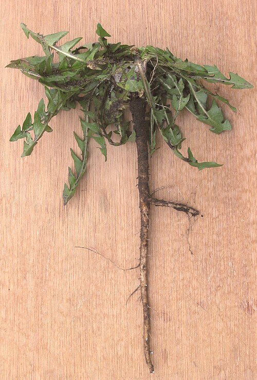

Mniszek lekarski
Taraxacum officinale · rodzina astrowate (Asteraceae) · „mlecz"



Występowanie
Cała Polska, pospolity
Wysokość
5–40 cm
Kwitnienie
IV – VI (główne), VIII – X
Zbiór kwiatów
IV – V (słoneczne dni)
Zbiór korzeni
III – IV lub IX – X
Surowiec
Kwiaty, liście, korzeń
Opis i występowanie
Bylina z białym sokiem mlecznym wydzielającym się po przełamaniu łodygi (stąd „mlecz"). Liście zebrane w rozetę przyziemną, pierzasto wcinane („ząbki lwa" — łac. dens leonis, fr. pissenlit, ang. dandelion). Kwiaty żółte, języczkowate, zebrane w pojedynczy koszyczek na pustej w środku łodydze. Po przekwitnięciu tworzy charakterystyczny puszysty „dmuchawiec".
Rośnie wszędzie — łąki, trawniki, brzegi dróg, ogrody, pęknięcia w chodniku. Korzeń palowy, sięga 30 cm w głąb (stąd trudno wyrwać). Doskonała roślina miododajna — wczesna pożywka dla pszczół.
Skład
| Część | Składniki |
|---|---|
| Korzeń | Inulina (do 40%!), taraksacyna (gorzka), garbniki, sterole, sole mineralne |
| Liście | Wit. A, C, K, kompleks B, żelazo, potas (wyższy niż w bananie!), wapń, chlorofil |
| Kwiaty | Flawonoidy, karoten, lecytyna, witaminy |
| Sok mleczny | Lateks z taraksacyną — gorzki, pobudza wątrobę |
Na co pomaga
- Wątroba i woreczek żółciowy — wzmaga wydzielanie żółci, klasyczne ziele „cholagoga".
- Trawienie — pobudza apetyt, pomaga przy niestrawności, wzdęciach.
- Detoks organizmu — kuracja wiosenna: 2-3 tygodnie naparu z całej rośliny.
- Drogi moczowe — moczopędny, ale bogaty w potas (nie wypłukuje go).
- Cukrzyca typu 2 — inulina poprawia tolerancję glukozy, korzystnie wpływa na mikroflorę jelit.
- Cera, trądzik, egzema — przez oczyszczenie krwi.
- Zaparcia — łagodny środek przeczyszczający.
- Brodawki, kurzajki — sokiem mlecznym smaruje się kurzajki kilka razy dziennie (klasyczna metoda).
Zbiór i suszenie
- Kwiaty — w słoneczne dni między 10:00 a 14:00 (otwarte). Bez nóżek do syropu. Nie zbieraj z trawników opryskanych ani przy ruchliwych drogach!
- Liście młode — wczesna wiosna (kwiecień), przed kwitnieniem — najmniej gorzkie, do sałatki.
- Korzeń — wykop w marcu/kwietniu (przed kwitnieniem) lub jesienią. Umyj, pokrój, susz w 40-50°C.
- Sok mleczny — używaj świeży, prosto z łodygi.
Przepisy
🍯 Syrop z kwiatów mniszka („miód majowy")
- Zerwij 400 koszyczków mniszka w słoneczny dzień (tylko kwiaty, bez zielonej części).
- Włóż do garnka, zalej 1 L zimnej wody. Zagotuj, odstaw na 24 godziny.
- Przecedź przez gazę, mocno wyciśnij. Dodaj sok z 1 cytryny i 1 kg cukru.
- Gotuj na małym ogniu 1-2 godziny aż uzyska konsystencję syropu (kropla nie rozpływa się na talerzu).
- Przelej gorący do wyparzonych słoików. Smakuje jak prawdziwy miód!
🥗 Sałatka z młodych liści mniszka
- Młode liście (przed kwitnieniem) opłucz, ewentualnie pomocz w słonej wodzie 10 min (mniej gorzkie).
- Połącz z roszponką, jajkiem na twardo, szpekiem boczku lub orzechami.
- Sos: oliwa, ocet jabłkowy, łyżeczka miodu, sól, pieprz.
- Klasyk francuskiej kuchni — salade de pissenlits aux lardons.
☕ „Kawa" z korzenia mniszka (bezkofeinowa)
- Wykopane korzenie umyj, pokrój na drobne kawałki, susz w piekarniku 50°C aż całkiem suche.
- Praż na suchej patelni do ciemnobrązowego koloru (uważaj na spalenie!).
- Zmiel w młynku do kawy.
- Łyżeczkę proszku zalej 250 ml wrzątku, parzy 5 min. Smak podobny do kawy zbożowej. Można dosłodzić.
💡 Doskonała alternatywa dla osób na bezkofeinowej diecie. Wspiera wątrobę przy każdej filiżance.
🍶 Nalewka z korzenia mniszka
- Suchy korzeń umieść w słoiku, zalej alkoholem.
- Maceruj 4 tygodnie, codziennie potrząsaj.
- Przecedź. Pij 20-30 kropli z wodą przed posiłkiem (na trawienie i wątrobę).
🍷 Wino z mniszka (do degustacji)
- 4 litry kwiatów (bez zielonych części) zalej 5 l wrzątku, odstaw na 3 dni.
- Przecedź, dodaj 1,5 kg cukru, skórki i sok z 2 cytryn i 1 pomarańczy.
- Gotuj 30 min, ostudź, dodaj drożdże winiarskie.
- Fermentuj w gąsiorze 6-8 tygodni do końca burzliwego wrzenia.
- Przelej, leżakuj 2-3 miesiące. Wino delikatne, jasnozłote, przypomina muscat.
✓ Zalety
- Cała roślina jadalna — kwiaty, liście, korzeń, łodygi
- Najbogatszy ziołowy syrop "miodowy" — alternatywa miodu dla wegan
- Działanie na wątrobę bez sztucznych preparatów
- Bogaty w potas — moczopędny bez wypłukiwania elektrolitów
- Inulina wspiera mikroflorę jelitową (prebiotyk)
- Rośnie wszędzie i jest gratis
- Korzeń jako kawa zbożowa — wsparcie wątroby przy każdym kubku
✗ Wady i przeciwwskazania
- Niedrożność dróg żółciowych — kategorycznie nie!
- Aktywne wrzody żołądka i dwunastnicy
- Może powodować zgagę u wrażliwych
- Sok mleczny plami ubrania i palce (na żółto)
- Alergia na rośliny astrowate (rzadko)
- Ostrożnie przy lekach moczopędnych i obniżających cukier
- Korzeń trudno wyrwać z ziemi — łopata wskazana
⚠ Nie zbieraj z trawników publicznych ani w pobliżu dróg, parkingów, pól uprawnych — mniszek silnie kumuluje pestycydy, ołów i metale ciężkie.
Ciekawostki
- 1 dmuchawiec produkuje do 200 nasion, które potrafią dolecieć kilka kilometrów na wietrze.
- W II wojnie światowej w Niemczech próbowano produkować z mniszka kauczuk — ze względu na lateks w korzeniu.
- Francuska nazwa pissenlit = „posikaj łóżko" — od silnego działania moczopędnego, ostrzeżenie przed wieczornym piciem.
- W ludowej medycynie biały sok mleczny przykładano na bolące zęby (działa miejscowo znieczulająco).
- Mniszek rozmnaża się apomiktycznie — bez zapłodnienia. Dzieci są klonami matki. Stąd setki mikrogatunków w Polsce.